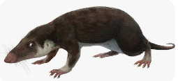

Ssaki to grupa kręgowców, których charakterystycznymi cechami są obecność gruczołów mlecznych, włosów oraz stałej temperatury ciała. Większość ssaków rodzi żywe młode i karmi je mlekiem. Do ssaków należą między innymi ludzie, psy, koty, słonie, wieloryby, nietoperze oraz wiele innych gatunków zamieszkujących wszystkie kontynenty. Pierwsze ssaki pojawiły się około 225 milionów lat temu. Przetrwały wymieranie dinozaurów i z czasem stały się jedną z najbardziej różnorodnych grup zwierząt na Ziemi.
⬅ Powrót